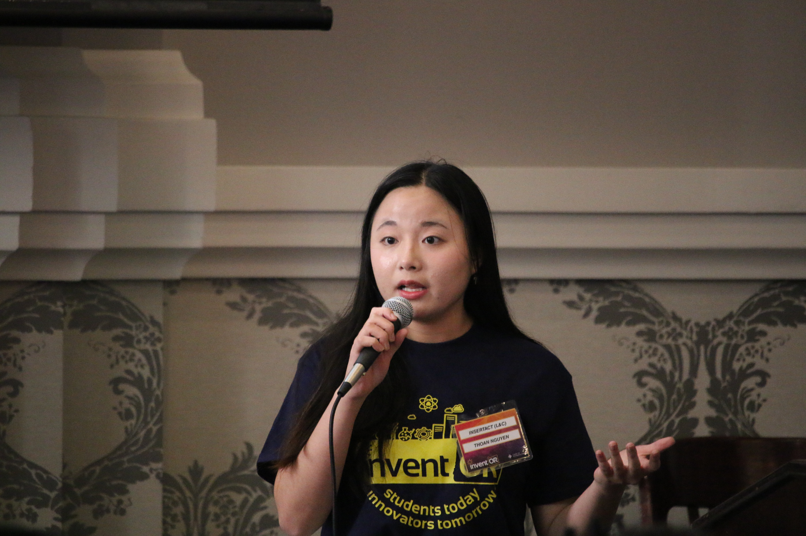
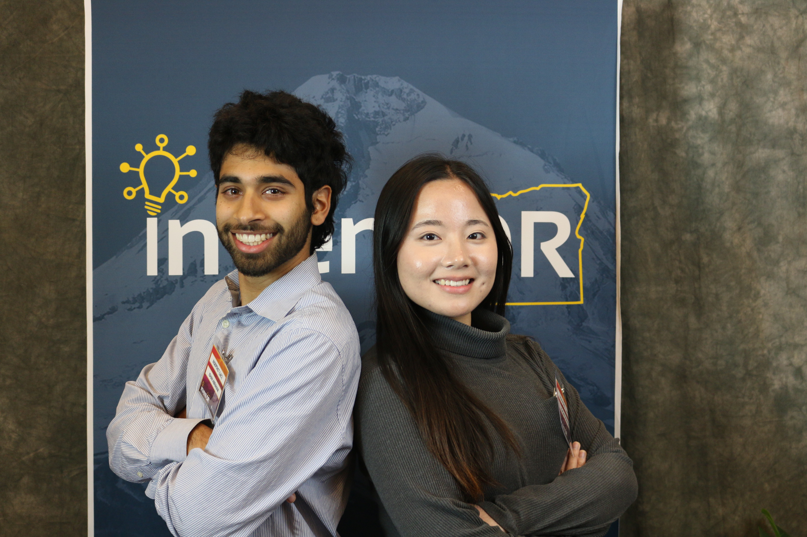
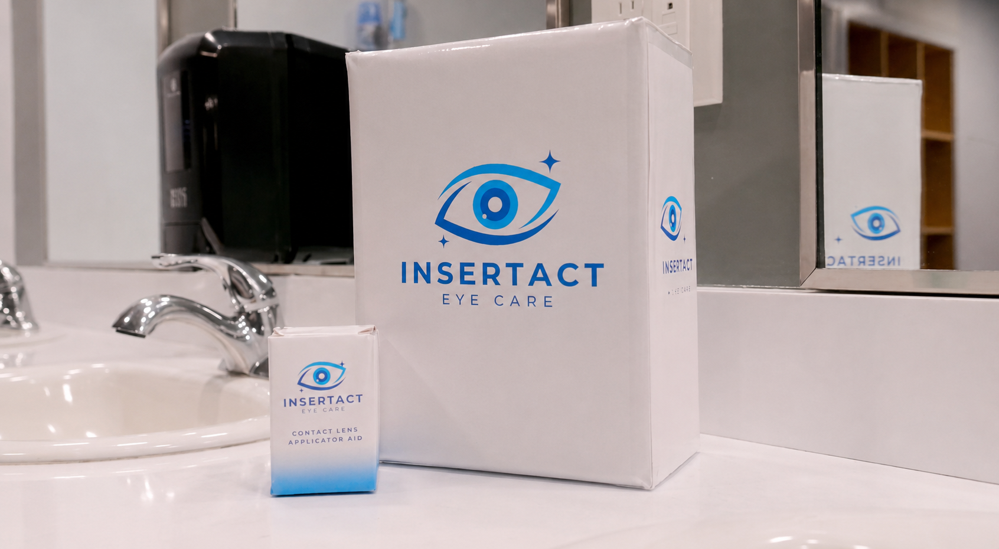
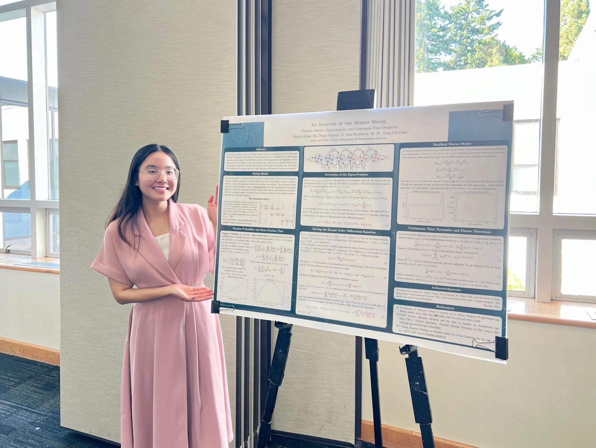
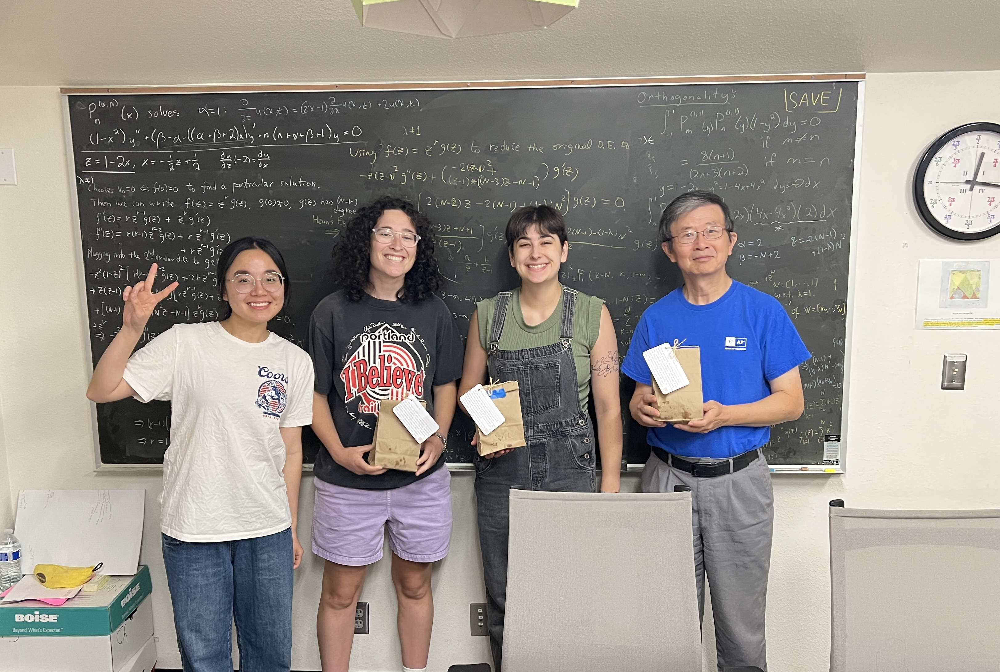
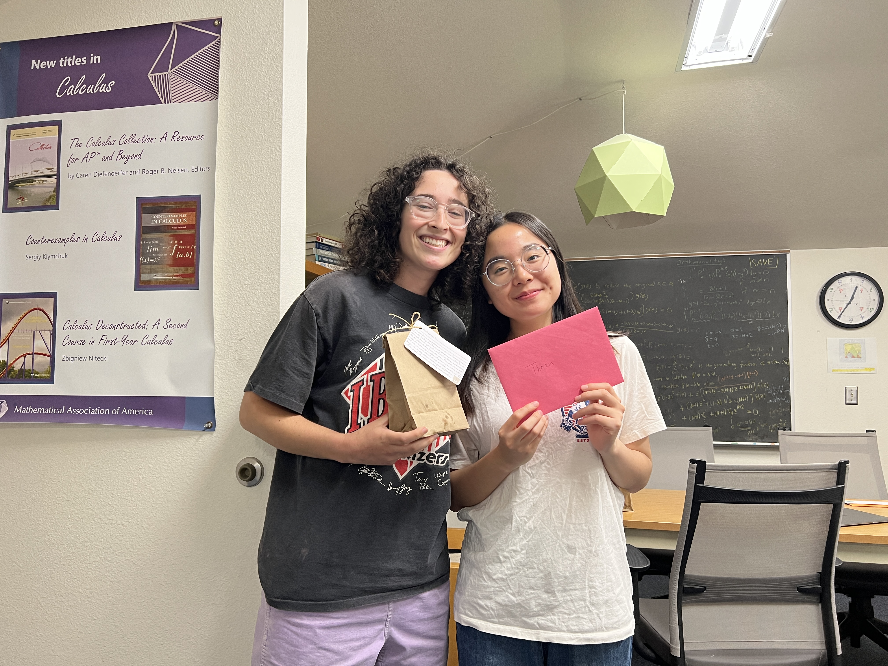

Entrepreneur | Lewis & Clark Scholar | Student Leader
View my projectsI am a rising senior at Lewis & Clark College, double majoring in Mathematics and Computer Science with a minor in Economics. I am currently founding a startup called Insertact, where we are developing a contact lens insertion and removal device.
I have a strong foundation in data analysis, probability, and financial modelling. I enjoy applying quantitative skills to tackle real-world challenges in insurance, finance, and risk management.
Beyond academics and start up, I actively contribute to the Lewis & Clark College community through leadership roles in student organizations and part-time campus positions.
Outside of work and study, I enjoy running, photography, vlogging, cooking, baking, and watching MasterChef, which keep me energized and creative.
An early-stage startup developing a contact lens insertion and removal device for specialized contact lens users.
This project originated from the 2026 Winterim Competition at Lewis & Clark College, where I won first place and decided to move forward with the business. Currently, we are focusing on customer discovery and validation while continuing to develop our prototype. We will present at the final pitch day of InventOR on June 26th. Come cheer us on! You can get a free ticket here.



A mathematics research project on the Moran model.
During the summer of 2025, I worked as a research assistant under Professor Yung-Pin Chen on a mathematics research project focused on the Moran model and stochastic systems.


